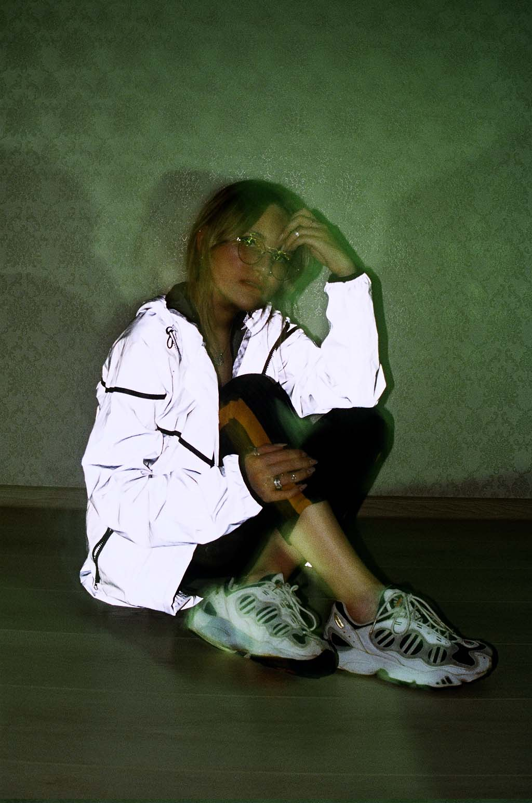
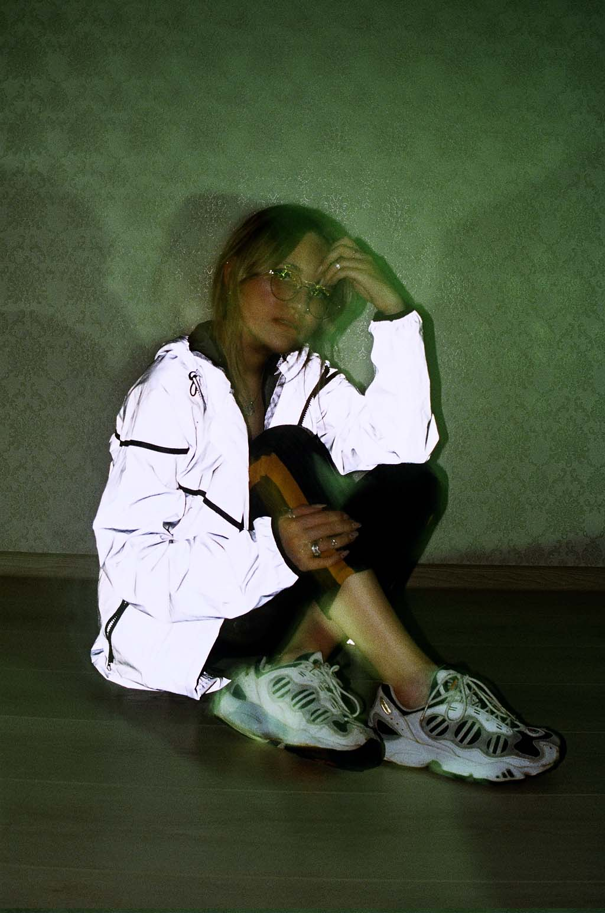

В этом посте вас ждет подробная история создания журнала о винтажных кроссовках на девочках, который занял немалое время с момента задумки до конечного продукта.
Мне хотелось бы поделиться с вами всеми веселыми историями связанными со сьемками, трудностями стоявшими на пути и как на самом деле не сложно взять и довести дело до конца.
Привет, сегодня я расскажу о том как на свет появился журнал "SOMEVAN VOL.1 Girls And Sneakers". Каких трудов стоило набрать материал, объяснить знакомым и подругам, чего ты вообще от них хочешь, почему именно девочки и почему именно кроссовки.
В процессе создания журнала появлялось огромное количество подводных камней, т.к. предшествующего опыта создания фото проектов у меня никогда не было, но вся эта затея изначально вызывала большой интерес, и это только подливало масла в огонь.
Основная концепция и направление вытекло из двух самых красивых, по моему мнению, вещей, это старые кроссовки, конца 90-х начала 00-х и женский пол. Будучи человеком не особо разбирающимся в нюансах фотографии, построении кадра и т.д. – понимания как это все вообще можно сделать я не имел, но желание попытаться и довести начатое дело до конца было сильнее.
Хотелось расширить границы и отойти от фиксирования уличной культуры, граффити райтеров и постоянных тусовок с большим количеством модной молодежи кидающих распальцовки в объектив, попробовать себя в том, к чему я проявляю неподдельный интерес.
Чебоксары. Первые съемки
Первые 2 полноценные съемки проходили в городе Чебоксары. У товарища, который меня туда заманил в магазине с отечественным стрит виром работала продавцом девочка, с которой до этого мы познакомились в прошлые приезды. Её , кстати, Таня зовут. Рассказав о том какую идею я хочу реализовать она дала полное согласие и передо мной встала первая проблема – где снимать?!
Погода на улице была не самой лучшей, каких либо знакомых имеющих студии в этом городе у меня нет. Решено было попросту снять номер в гостинице в центре города, этим было решено сразу 2 проблемы – локация и ночлег. Я прихватил 2 пары кроссовок и на всякий случай разработал план Б – договорился о съемке с девочкой, с которой мы познакомились в интернете.
Большим преимуществом было то, что Таня сама увлекается фотографией, довольно долго занималась съемками на отечественную пленочную фото технику. Мы не разговаривали на эту тему подробно, но в процессе съемки она подсказывала и давала понять с каких ракурсов стоит, а с каких вообще не стоит снимать девочек, это было забавно!


Таня уехала по своим делам, температура , с которой я приехал в Чебоксары, поднялась до 38, но хотелось привезти побольше материала, поэтому я созвонился с Сашей и предложил ей добраться до меня и попробовать что-нибудь поснимать.
Это очень странное чувство, снимать человека, которого ты толком не знаешь, но общий язык был найден быстро, мы сняли всё что нужно за час , через неделю, уже здоровый и довольный смотрел на телефоне что же вышло с первой полноценной съемки.
Через месяц я так же оказался в Чебоксарах и предложил Тане с Сашей поснимать что-нибудь , прихватил с собой около 5 пар кроссовок, из которых лишь в трех мы сделали классные снимки, с локациями мучаться не пришлось, номер в той же гостинице и в съемной квартире с однотонным фоном подошел очень даже ничего.
 

Поездка в Уфу
Прошло уже два месяца как постоянные повседневные заботы и рабочий график завязывал руки все сильнее, приближался чемпионат мира по футболу. Находиться в это время в Нижнем Новгороде желания не было абсолютно. По этой причине я связался со старыми друзьями из Уфы, решил вопрос с жильем, взял с собой несколько пар кроссовок и поехал скрываться от толп иностранцев, мешающих комфортному передвижению по главным улицам моего родного города.
Маша была первым человеком, ради которого я , признаюсь честно, исколесил весь город в поиске одежды, так как именно ее хотелось поснимать в Nike Air Max Tailwind 4 и спортивных штанах с лампасами! В голове был отчетливый образ, что это должна быть съемка на улице, в стильной уличной одежде и желательно рядом со стареньким автомобилем. Первая неделя была потрачена на акклиматизацию и разговоры по телефону , рассказы о своей идее знакомым ребятам, которые впоследствии мне очень сильно помогали. Всю одежду я позаимствовал у друзей, с автомобилем помог Жора. Жора вообще мог Ягуар и Импалу раздобыть, но мы остановились на его автомобиле Mercedes.


Чтобы выжать максимум я снимал машу в двух разных парах обуви, мы провели на жаре около 2 часов, отсняли около 3 пленок по 36 кадров, но настроение у всех было отличное, Маша, вроде, даже не устала =)
Сразу после съемки с Машей путь лежал к стадиону Динамо в центре Уфы, где мы договорились с Аней поснимать на трибунах. Приехав мы столкнулись с проблемой – обычных людей на стадион просто так не пропустят. Увидев фотоаппараты нам начали говорить что-то о платном входе, видимо местные фотографы частенько пытаются туда пробраться и администрация просто начала выставлять им ценник. Этот сценарий нас не привлекал, после 10 минут поисков в телефонных книжках нашли человека, который провел нас через все турникеты, сказал, что у нас 2 часа и не теряя времени мы быстро приступили к делу.

Аня мой очень хороший друг, с которым даже на большом расстоянии мы регулярно поддерживаем контакт. Счастьем для меня является то, что до этого она уже работала с фотографами, знает свои преимущества и не боится камеры. Кроссовки на этот раз были не мои, Аня прихватила с собой две пары Adidas.
Следующие три съемки о которых я расскажу были абсолютно не запланированы и отсняв 5 пленок в Уфе я надеялся приехать и поснимать несколько человек в Нижнем, но тем как легко это всё обсуждалось и организовывалось я был просто ошеломлен!
В течение следующей недели заранее договорившись в интернете о встрече были отсняты мои самые любимые пары Nike Air Max 96 и Adidas Catch 22 На Альмире и Гульшат.
С Альмирой вообще забавно вышло, мы снимали на улице возле белого дома, немного торопились, потому что ей очень нужно было успеть на экзамен в институт, но за ограниченное время мы все равно успели получить несколько хороших снимков. Проявив пленку с Альмирой очень сильно удивился, часть снимков была наложена на снимки, которых я не делал. Оказалось, что пленка уже была ранее отснята, но не полностью, товарищем, который мне эту катушку подарил, благополучно забыв о том, что фотоаппарат зажевал и просто промотал не доснятую пленку.
Предыстория последней съемки в Уфе кажется мне еще веселее самой сьемки. Мой хороший друг , которому я регулярно отчитывался и рассказывал что во всю собираю материал и в скором времени планирую отдать всё в печать - предложил поснимать мне свою девушку. Я не придал этому значения, намекнул на то, что возможно ей придется раздеться и посоветовал отложить ему эту идею до лучших времен. Так как все привезенные мной пары были отсняты, у нее в коллекции винтажных сникеров не оказалось, вопрос был закрыт.
Через некоторое время, за несколько дней до возвращения домой , товарищ по имени А просит меня пожить в его квартире 3 дня , пока он с друзьями будет в походе с палатками и прочими шалостями. Идея отличная, я не отказал, абсолютно не подумав, что А уже несколько лет занимается реселлом очень редких вещей и имеет в своих шкафах огромное количество курток, футболок, и конечно же кроссовок!
Решено было срочно найти человека, которого бы в это все можно было нарядить, а потом раздеть, я позвонил другу и припомнил ему о предложении поснимать его девушку. Уже через час мы мерили куртки и прикрывались кроссовками, молодой человек все время находился рядом, это, наверное, самая интересная и веселая съемка за все время. Я не смог позволить себе делать такое дело на трезвую голову и позволил себе пару литров пива, чтобы вообще не думать о том, что что-то идет не так. Итоги прилагаю.
Через некоторое время журнал был сверстан, доведен до ума, отдан в типографию и отпечатан в небольшом количестве 50 экземпляров.
В журнале намерено нет дополнительного текста, журнал минималистичен, это мое видение двух любимых вещей – девочек и кроссовок, и если первое нравится большей половине мужчин , то второе – это узкий профиль, который будет интересен не всем.
Огромное спасибо каждому, кто прочитал этот рассказ до конца!
По вопросам приобретения свяжитесь со мной в Инстаграмеили напишите на почту, кое что еще осталось.